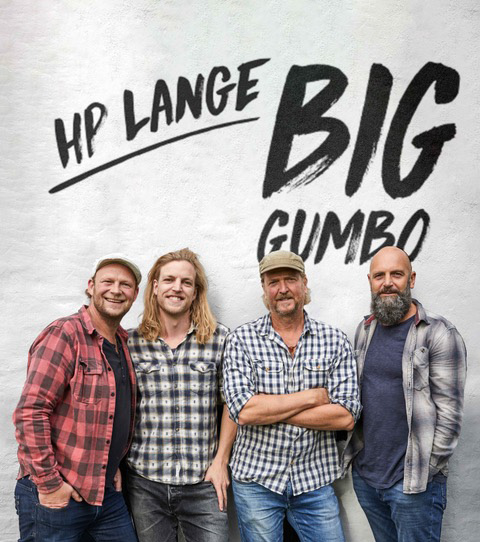

HP Lange Whats Cooking
HP har boet og spillet i New Orleans hvor han tog the southern cooking til sig. For kun 150,- får du muligheden for smage hans Gumbo-Gryde. Gumbo er en tyk velsmagende suppe fra Louisiana. Faste bestanddele er først og fremmest en god fond - typisk lavet på kyllinger. Suppen tyknes med en roux, som er en mel og olie blanding der forsigtigt varmes på en pande i en til to timer. Roux’en er også en kraftig smagsgiver. Okra, som på afrikansk hedder n’gumbo har givet navn til retten. Okraen smager ikke af meget men er en god proteinkilde og den tykner også suppen. ”Den hellige treenighed” kalder cajun folket blandingen af løg, bladselleri og grøn peber, som også er en fast bestanddel i gumboen. Suppen krydres med en cajun krydderiblanding bestående af timian, oregano, paprika, cayennepeber, sort peber, hvidløgspulver og salt. En god letrøget pølse skal der også i - samt kyllingekødet fra fondkogning. Derefter kan man putte kød eller skaldyr i, stort set som man vil. Som de siger dernede: alt hvad der kan fanges, skydes eller fiskes ryger i gryden. Suppen serveres typisk med lidt ris. Kom og mød HP Lange og smag hans Gumbo-Gryde, en autentisk southern kulinarisk og musikalsk oplevelse.
Medlemmer
- HP Lange: Guitar, banjo og sang
KaffeFair
KaffeFair tilbyder et sortiment af forskellige rette og drikkevare fra brunch til hverdagsretter, kagebar, vin og mere. Deres retter er lavet af lokale råvare fra nordjyske avler og har stor fokus på dyrevelfærd, miljø og klimaftryk.
Strandvejen 19, 9000 Aalborg
Få rutevejledning